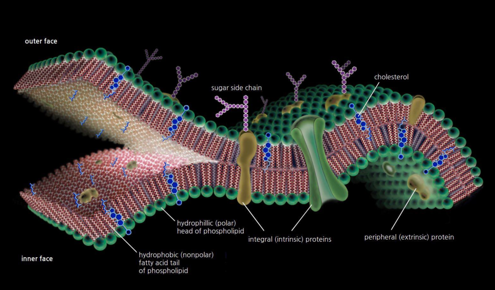
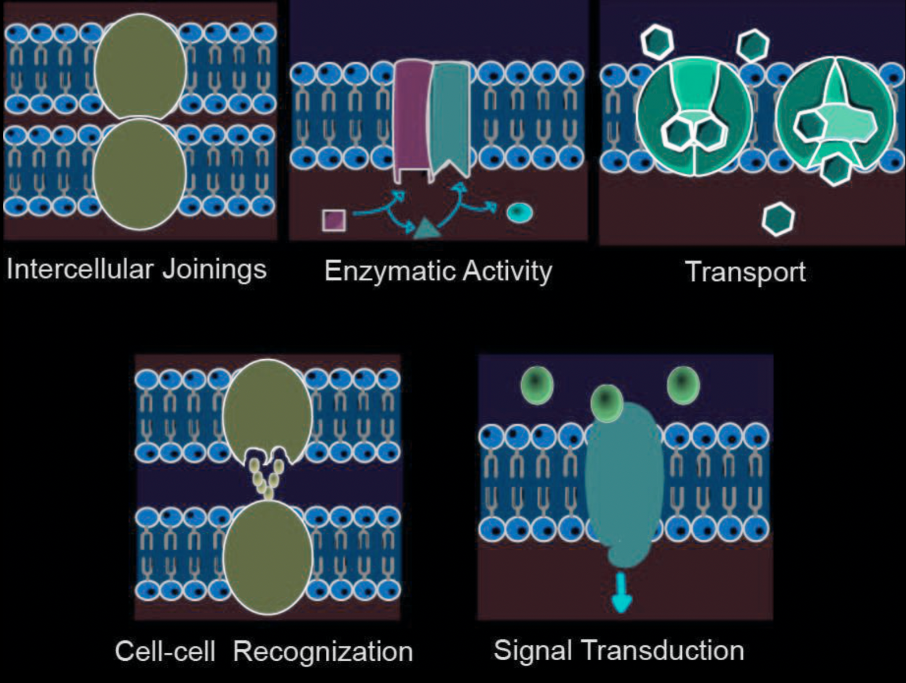
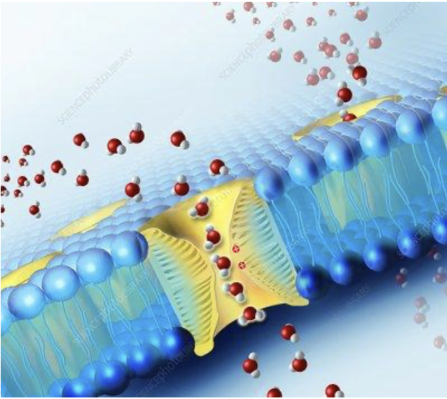

Structure and Physical Properties of the Membrane
- The main components of cell membranes are lipids (especially phospholipids) and proteins, although carbohydrates also possess an important role.
- A phospholipid is an amphipatic molecule meaning it has both a hydrophilic region (meaning 'water-loving') and a hydrophobic region (meaning 'water-fearing'). Most membrane proteins are also amphipatic molecules.
- The arrangement of molecules in the membrane is called fluid mosaic model and it takes its name from the bilateral quick movements of the phospholipids and slow movements of the proteins.
- The phospholipids are held together by hydrophobic interactions, while the proteins are also held by electrostatic interactions.
- Inbetween the phospholipids in the membranes of animal cells, we cand find cholesterol, which makes the membrane less fluid but also lowers the temperature required for the membrane to solidify, process in which unsaturated hydrocarbon tails also take part as their double bonds form kinks, distancing the phospholipids from each other. In extreme environments, the membrane's composition presents evolutionary adaptations.
- Referring to the synthesis of the membrane, carbohydrates are synthesised inside the endoplasmic reticulum, which are then transported through a vesicle to the Golgi apparatus and are then modified there to glycolipds, which are taken to the cell membrane by a vesicle which fuses with the cell membrane.

Types of Proteins in the Cell Membrane
- Integral proteins are the ones that go through the hydrophobic layer of the membrane, and most of them are transmembrane, meaning that they poke out on both sides of the membrane. Peripheral proteins are bound to the surface of the membrane by electrostatic interactions.
- Transport - integral proteins that present a channel for a particular solute or that change shape so as to allow the passage of bigger molecules.
- Enzymatic activity - integral proteins with an active site to which substances from the extracellular/intracellular can bind to.
- Signal transduction - integral proteins that have a binding site for a chemical messenger. When receiving a message, the cell responds through physical and/or chemical changes. It also binds to a cytoplasmatic protein.
- Cell-cell recognition - integral proteins that act as a way for cells to recognise each other and it causes cell-cell bindings for short periods of time. In this process, carbohydrates also have an important role, functioning as markers.
- Intercellular joining - proteins that form cell-cell bindings for longer periods of time through various kinds of junctions.
- Attachment to the cytoskeleton or extracellular matrix - elements of the cytoskeleton are noncovalently bound to membrane proteins and these bindings have an important role in maintaining cell shape and stabilizing different proteins, which coordinate cellular exchanges.

Selective Permeability
- This is the most important role of the membrane: it controls which molecules can pass it easily and which can't.
- Nonpolar molecules (e.g. \(\ce{CO2}\), \(\ce{O2}\), hydrocarbons) are hydrophobic as lipids and so they dissolve in the lipid bilayer so they can cross the barrier easy and quickly.
- Polar molecules (e.g. glucose and other sugars) require transport proteins to go cross the membrane. Transport proteins are specific for one substance/one group of substances and they change shape to allow the passage of the molecules. Water, a polar molecule of small dimensions, crosses the membrane through protein channels called aquaporins.
- A transport protein allows only a certain substance or a group of substances to cross the membrane.

Written by Bianca Buzas